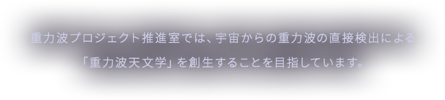
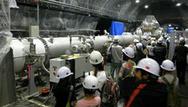
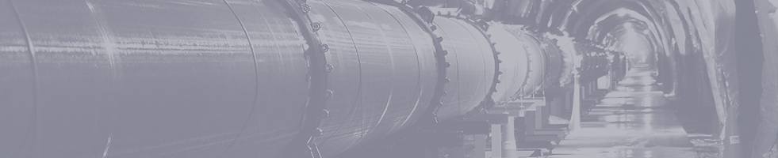
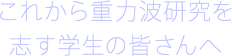
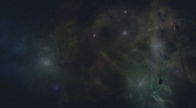
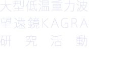
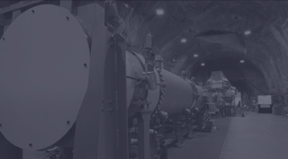

重力波とは
研究活動
ギャラリー
NEWS
トピックス
推進室紹介
ENGLISH
院生募集
リンク
アクセス

一覧

2015.06.03
KAGRAトンネル完成に関する記者会見と見学会を実施
2015.06.03
KAGRAトンネル完成に関する記者会見と見学会を実施
2015.06.03
KAGRAトンネル完成に関する記者会見と見学会を実施KAGRAトンネル完成に関する記者会見と見学会を実施KAGRAトンネル完成に関する記者会見と見学会を実施
一覧
2015.11.24
11月19日にNHK国際放送（英語放送）でKAGRAが紹介され、麻生洋一准教授がインタビューを受けました。
2015.11.24
11月19日にNHK国際放送（英語放送）でKAGRAが紹介され、麻生洋一准教授がインタビューを受けました。
2015.11.24
11月19日にNHK国際放送（英語放送）でKAGRAが紹介され、麻生洋一准教授がインタビューを受けました。
2015.11.24
11月19日にNHK国際放送（英語放送）でKAGRAが紹介され、麻生洋一准教授がインタビューを受けました。
2015.11.24
11月19日にNHK国際放送（英語放送）でKAGRAが紹介され、麻生洋一准教授がインタビューを受けました。
2015.11.24
NHK・BSプレミアムの番組『コズミック フロント』で「アインシュタイン最後の宿題 重力波を探せ」という特集が放送されました。

大型低温重力波 望遠鏡KAGRA 運転開始迫る

